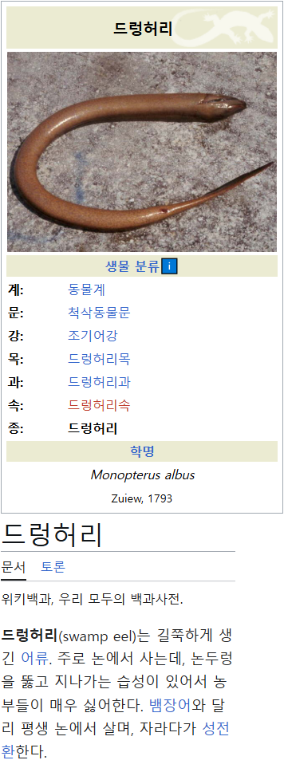

TS?
드렁허리 말포이
그 채색주의자 깔때 처음 들어봄
논에선 밭의 두더지급으로 좆시발련이라던데
멀쩡했던 논둑이 갑자기 무너지면 높은확률로 저놈이 범인
둑이 무너져서 논에 물 댄게 다 빠졌다 안카요
말포이허리
절대 드렁허리자위를 찾아보지마
엣
저거 맛있음
드릉드릉
성전환
말포이
저거 물고기보다는 뱀처럼 생김
물밖에 머리 내밀고 폐호흡도 해서 더 뱀같음
맛은 안정적임
손 물려고하네 아플까
논에 사는놈들은 물면 피나
동물보호한다는 채식주의자들, 농사지으면서 드렁허리 두더지 등 수없이 죽여가며 수확한다는거 알고는 있을까?
환경을 위하는게 원시 시대로 돌아가자는게 아니듯이,
채식을 한다는게 살생을 0으로 만들자는게 아님.
당연히 줄일 수 있는한 줄이자는거지.
육식을 위해서는 사료를 키워야하고,
이 양은 당연 채식 대비 압도적으로 많음(같은 양의 칼로리나 영양소 대비 육식이 압도적으로 경작물을 많이 필요로 함).
그러니 당연히 그 과정에서 죽는 동물도 훨씬 많음.
따라서 채식이 육식보다 ‘죽이는 생명의 수가 더 적다는건’ 타당한 사실임
채식에 대한 찬성 반대는 네 자유인데,
허수아비를 패지는 마셈.
상식인이고 교양인이잖아.
멋지다
채식주의자들 대다수가 '윤리' '도덕' 따위를 내세우며 육식을 부정하니까 저런 말이 나오는거지.
육식의 그런 점이 문제라면 현재 서구에서 유행중인 재생농장식 목축이 있음
이건 일반 농업보다도 살생이 적을 뿐더러 일반 농업보다도 환경과 지구, 생태계에 유익함.
특히 일반 농업이 표토층을 작살내며 고갈시키고 있는데, 이건 정반대로 그 표토층을 회복시키는데 초점이 맞춰져있고.
이런글엔 반박 못하니 답글 안달릴 예정ㅋ
누가 새벽 5시에 커뮤를 하니. 출근 안 해?
애초에 육식을 하면 가축을 죽여야하는데,
살생을 가능한 줄이자는 입장에서는 당연히 아웃이지.
뭔 반박이나 필요하다고.
채식주의자라면 재생농장식 농업으로 채식을 하자 하겠지,
재생농장식 농업으로 목축업을 해서 육식을 하자고 할까봐?
채식주의자들은 살생을 줄일 수 있는 한 줄이자는 주장인데,
육식을 위해 가축을 죽이는건 당연히 아웃이지...
재생농장식 농업이 살생이 가능한 줄어드는 농업이면
재생농장식 농업으로 채식을 하자고 하겠지.
재생농장식 농업으로 목축업을 하자고 하진 않지.
재생농장식 농장의 초점은 목축을 통한 표토층 회복이라고 적어놨지? 그게 중점임.
재생농장이 살생이 적은 이유는 가축들을 통해 생태계 순환을 재현하는데에 있음.
그래서 기존 농업보다 살생이 적은거고. 농약 뿌려서 동물들 죽이거나 잡초와 풀을 무차별로 자르고 흙을 뒤엎을 일이 없으니까.
이러는 과정에서 표토층이 회복되는거고 그래서 목축업 없이는 의미가 없다는거.
이래서 채식주의자들의 '아무튼 육식은 안돼요' 가 안맞는거고
내가 채식주의자도 아니고, 재생농장이고 뭐고 잘 모르거든?
근데 대충 찾아보니 이게 뭐 목축업이 필수적으로 결부되야만 할 수 있는건 아닌거 같네.
그러면 채식주의자들이 재생농장식 농업으로 채식주의를 하자고 주장하지,
왜 재생농장식 농업을 바탕으로 목축업을 하자고 할까..?
난 잘 모르니까,
재생농장식 농업에 목축업이 반드시 필요한게 맞다면 관련 레퍼라도 부탁해.
그건 니 생각이고 ㅋㅋ
본적이 한번도없음
오늘 봤잖나? 그럼된거임
친할머니가 제일 싫어하셨던 놈이네ㅋㅋㅋㅋ
생각보다 귀엽게생겼네
아 말포이셔?
시골 안쓰는 샘에 살던게 생각나네. 고약한 소리로 우는 것도 특이 했는데.
들어 허리
뭣?
형
길쭉해요
장어 종류네
징그러
진짜 동물 이름이 저거네ㄷㄷ
성깔드렁